Als nächstes haben wir uns die Pinnacles vorgeknöpft. Das ist eine Karst-Formation hoch in den Bergen von Mulu. Mit der Zeit sind einzelne Steinsäulen freigeschwemmt und durch den Regen zu messerscharfen Keilen geschliffen worden. Wie Grabsteine ragen die 40m hohen Steine aus dem Wald. Der Ort ist aber nicht besonders zugänglich, so dass man eine dreitägige Tour machen muss. Am ersten Tag wurden wir mit einem kleinen Boot den Fluss hinauf geschippert. Auf dem Weg lagen noch mehr Höhlen mit noch mehr Rekorden und eine malerische Badestelle, wo der unterirdischer Fluss der Clearwater Cave wie aus dem nichts aus dem Fels erscheint. Der Fluss führte so wenig Wasser, dass wir immer wieder aussteigen und schieben mussten.
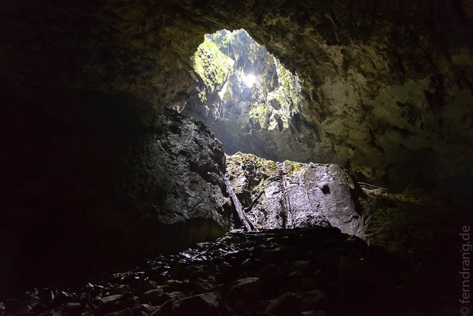
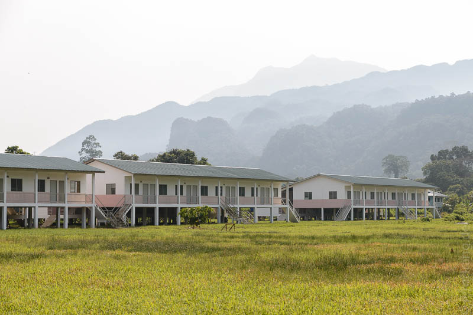
Vom Fluss aus führt dann ein neun Kilometer langer Wanderweg zum Basislager Camp 5. Der Weg ist flach und gut zu laufen. Der Führer hat allerdings ein Tempo vorgelegt, dass es unmöglich machte, den schönen Regenwald näher zu betrachten. Bei der schwülen Hitze waren wir nach wenigen Metern triefnass. Das Camp hat offene Schlafsäle mit dünnen Plastikmatratzen, die man gegen Gebühr noch mit Decken, Laken und vor allem Moskitonetzen veredeln kann. Im Fluss kann man sich herrlich erfrischen. Es gibt aber auch Toiletten und Duschen für ernsthaftere Reinigungsversuche.
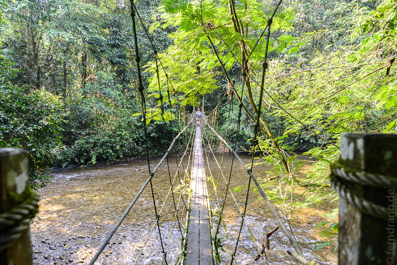
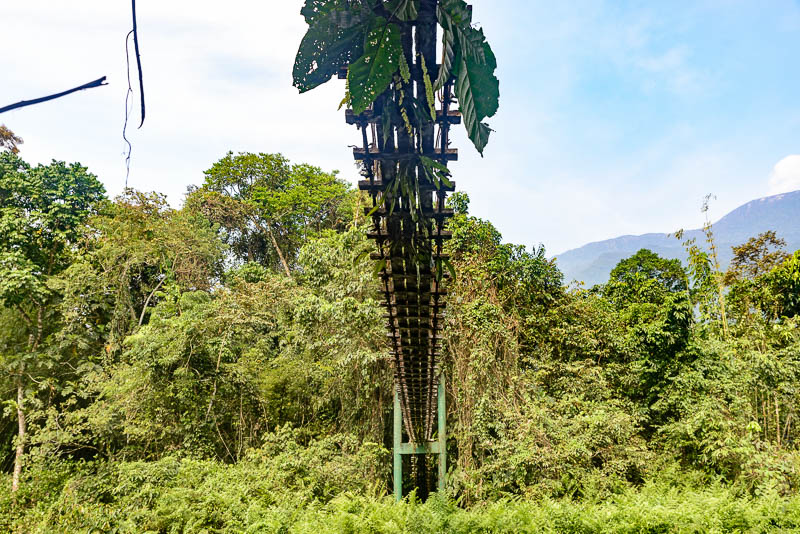
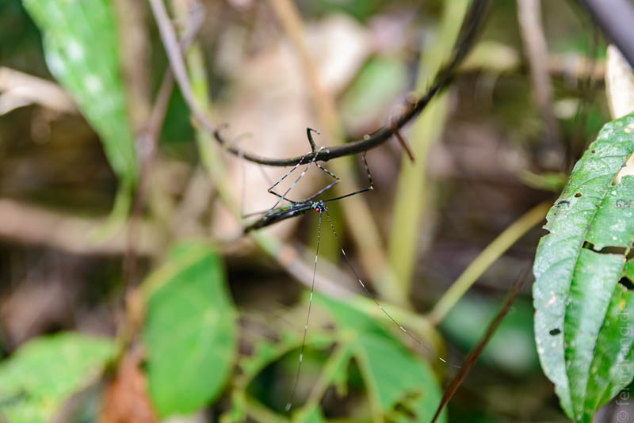
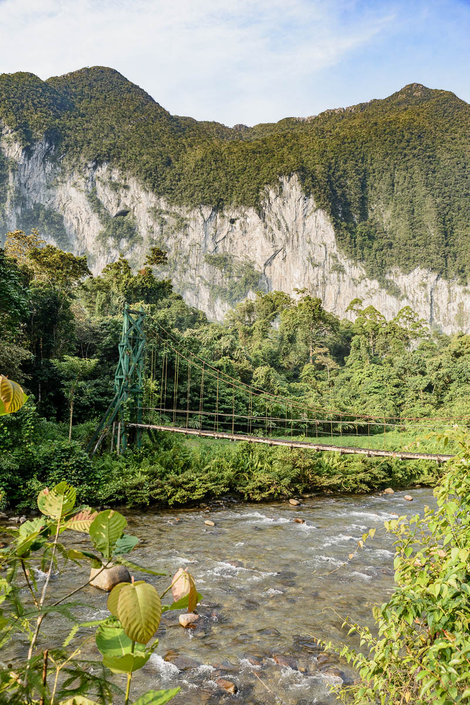
Um den Aufstieg zu den Pinnacles wird eine Menge Aufsehen gemacht. Man muss sich etwas mehr als 1000 Höhenmeter durch den Wald hochkämpfen. Bei einer Gesamtstrecke von nur 2,4 km kann man sich ausmalen, wie steil das ist. Das letzte Stück führt durch ein Gewirr von scharfen, zerklüfteten Karstfelsen, wo das Durchkommen nur von Leitern ermöglicht wird. Die ganze Strecke ist gut mit Meilensteinen versehen, die jeweils innerhalb einer maximalen Zeit bewältigt werden müssen, weil der Guide sonst das Recht hat, einen vom Berg zu schicken. Unsere Gruppe war mit einer Ausnahme sehr schnell. Allerdings war der Aufstieg auch anstrengend. Über Wurzeln und Steine sind wir zum Teil auf allen Vieren gekraxelt. Hier hat sich die dichte Vegetation bezahlt gemacht, es stand immer ein Stamm zum Hochziehen bereit. Dank der zahlreichen Pausen ließ sich der Aufstieg gut machen, auch wenn jeder mit drei Litern Wasser und Kamera usw. gut bepackt war.
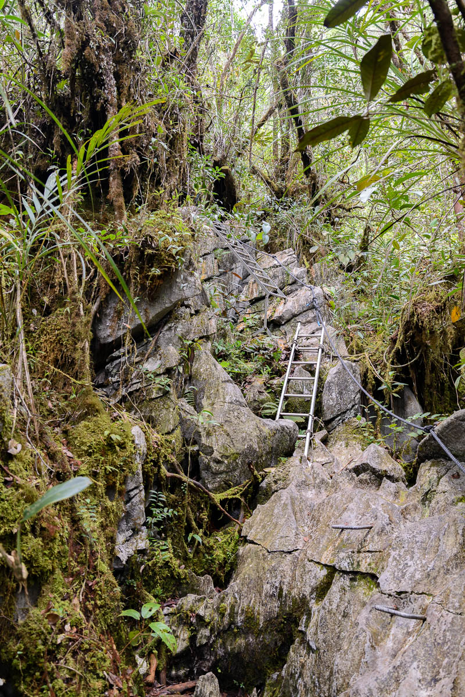
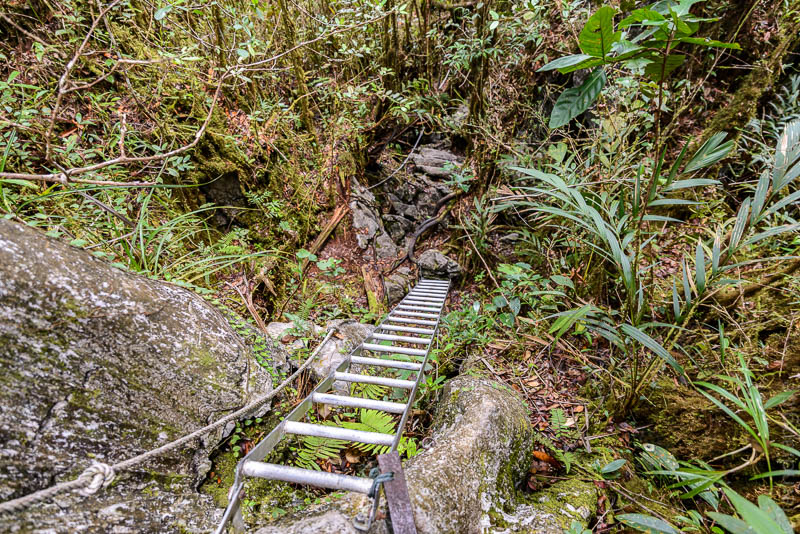
Oben wurden wir dann mit einem tollen Ausblick entschädigt. Wie ein geisterhafter Friedhof lagen die Pinnacles am gegenüberliegenden Hang. Als Belohnung gab es gebratenen Reis aus der Plastiktüte. Der Rückweg hat sich als wesentlich anstrengender erwiesen. An Seilen und Bäumen festhaltend haben wir uns die 1000 Meter wieder herunter gekämpft. Wie bei einer nicht enden wollenden Treppe, auf der jede zweite Stufe fehlt, mussten wir mit voller Konzentration jeden Schritt setzen. Alis Knöchel war begeistert und hat seinen Dank in schillernden Farben gezeigt. Unten hat uns ein erfrischendes Bad im Fluss erwartet, wo hunderte Schmetterlinge das Ufer bewachen.
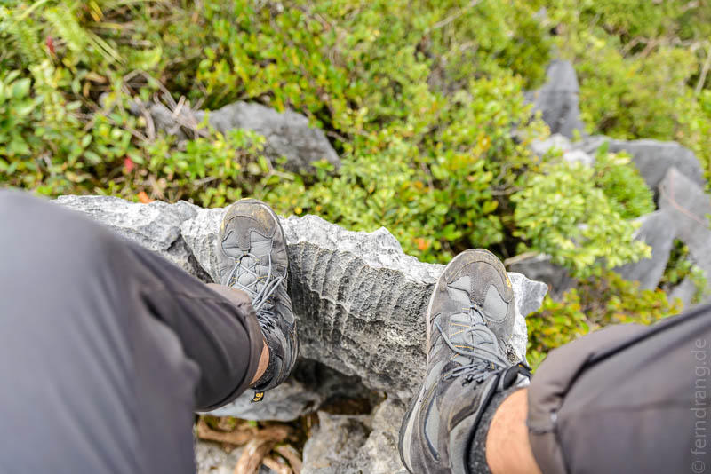
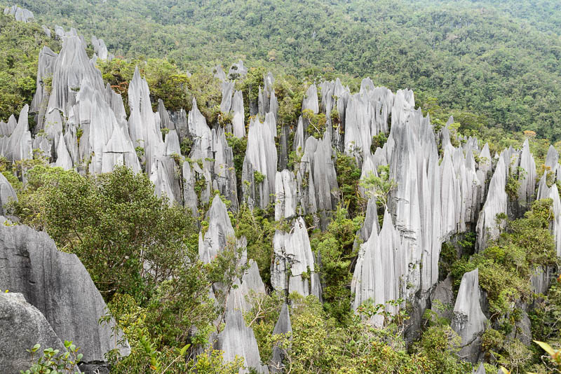
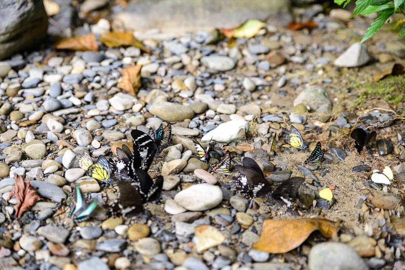